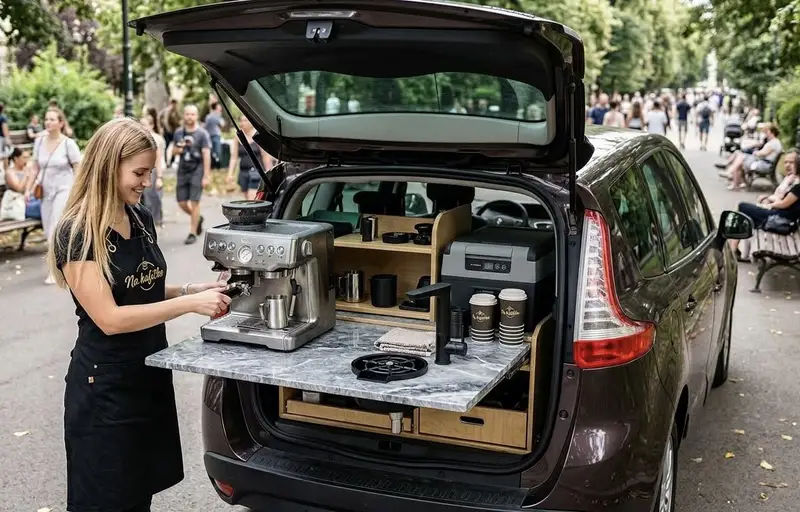

Mobilní kavárna, která přijede za Vámi

Hledáte originální oživení pro váš park, kulturní akci nebo soukromou oslavu? Na Kafíčko... není jen obyčejný stánek. Je to stylový kávový bar na kolech, který přináší vůni čerstvě mleté výběrové kávy tam, kde ji lidé nejvíce potřebují.
Naše filozofie je jednoduchá: Špičková kvalita, úsměv a naprostý respekt k okolí.
Jsme 100% energeticky soběstační. Nepotřebujeme přípojky elektřiny ani vody. Můžeme stát uprostřed louky i v historickém centru.
Náš provoz je tichý a čistý. Žádné kabely, žádný hluk. Po našem odjezdu zůstane místo v naprostém pořádku.
Pracujeme s profesionální technologií a výběrovou kávou. Každý šálek je připraven s láskou a precizností baristy.
Máte zájem o naši účast na vaší akci nebo chcete oživit veřejný prostor ve vašem městě? Rádi se domluvíme na spolupráci.
Aktuálně přijímáme rezervace pro letní sezónu!
Napište nám a domluvíme se